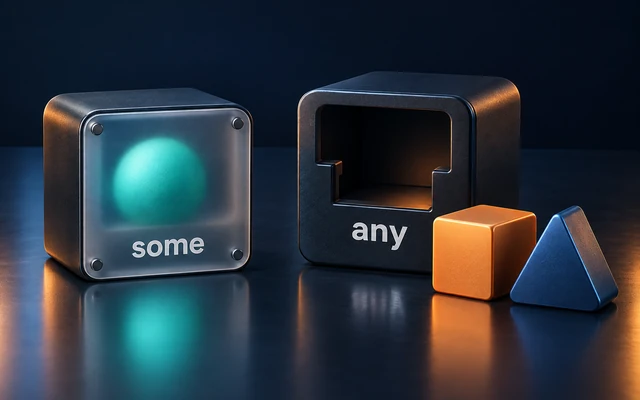

some View is in every SwiftUI file, and any Error is in most error-handling code. Both keywords put a protocol where a type is expected, but they mean very different things. some refers to one specific type that the reader doesn’t see but the compiler knows. any is a box that can hold a value of whatever conforming type, which can change at runtime. Picking the right one affects flexibility, performance, and which protocols you can use at all, and Swift 5.6 and 5.7 changed both of them significantly.

Opaque and Boxed Types in Swift: some vs. any
A shared example
protocol Shape {
func draw() -> String
func area() -> Double
}
struct Square: Shape {
var size: Double
func draw() -> String { "■ size \(size)" }
func area() -> Double { size * size }
}
struct Triangle: Shape {
var size: Double
func draw() -> String { "▲ size \(size)" }
func area() -> Double { size * size * 3.squareRoot() / 4 }
}
some: opaque types
An opaque type means “a specific type that conforms to this protocol; I’m not telling you which one.”
func makeLogo() -> some Shape {
Square(size: 3)
}
let logo = makeLogo()
print(logo.draw()) // ■ size 3.0
The caller only knows that logo is some Shape. The compiler, however, knows it’s a Square, and treats it exactly like one: no boxing, no runtime lookup, full optimization. It’s like a generic parameter in reverse: with <T: Shape>, the caller picks the concrete type; with -> some Shape, the implementation picks it.
The catch: it must be one type. Every return path has to produce the same concrete type:
func makeShape(pointy: Bool) -> some Shape {
if pointy {
return Triangle(size: 2)
}
return Square(size: 2) // ❌ ...the return statements in its body do not have matching underlying types
}
The identity is also stable: two calls to makeLogo() are known to return the same type, so their results can be compared or put in the same array, which an any couldn’t guarantee.
Why use some?
To hide complicated types. SwiftUI is the classic case: a view’s body might really be a deeply nested type like VStack<TupleView<(Text, ModifiedContent<Image, _PaddingLayout>)>>. Writing some View keeps that out of your code, while SwiftUI still sees the exact type and can diff view trees efficiently.
To change the implementation without changing the API. As long as you return some Shape, you can switch from Square to another type later without breaking callers, because they never depended on the concrete type.
Structural opaque types (Swift 5.7)
Since Swift 5.7, some can appear inside other types in return positions:
func makeShapes() -> [some Shape] {
[Square(size: 2), Square(size: 3)] // all elements are the same hidden type
}
func makeOptionalShape(_ visible: Bool) -> (some Shape)? {
visible ? Square(size: 1) : nil
}
print(makeShapes().map { $0.area() }) // [4.0, 9.0]
print(makeOptionalShape(true)?.area() ?? 0) // 1.0
some in parameters (Swift 5.7)
In parameter position, some is shorthand for an anonymous generic parameter:
func render(_ shape: some Shape) -> String {
shape.draw()
}
// Exactly the same as:
func renderGeneric<S: Shape>(_ shape: S) -> String {
shape.draw()
}
any: existential types (boxes)
An existential type is a container that can hold a value of any conforming type, and the type inside can change:
var current: any Shape = Square(size: 1)
current = Triangle(size: 1) // fine: the box now holds a Triangle
let shapes: [any Shape] = [Square(size: 1), Triangle(size: 2), Square(size: 3)]
for shape in shapes {
print(shape.draw())
}
That’s the flexibility you need for heterogeneous collections, for a property that holds “some delegate”, or for a strategy that can be swapped at runtime. Since Swift 5.6, the any keyword is the explicit way to write an existential, instead of using the bare protocol name: it makes the cost visible in the code.
Under the hood: what the box costs
Let’s measure the boxes:
protocol Named {
var name: String { get }
}
protocol ClassShape: AnyObject {
func area() -> Double
}
print(MemoryLayout<any Shape>.size) // 40
print(MemoryLayout<any Shape & Named>.size) // 48
print(MemoryLayout<any ClassShape>.size) // 16
print(MemoryLayout<Square>.size) // 8
An any Shape value on a 64-bit platform takes 40 bytes, called an existential container:
- a 3-word inline buffer (24 bytes) for the value itself, if it fits,
- a pointer to the value’s type metadata (how to copy, move, and destroy it),
- a pointer to the protocol witness table (the type’s implementations of
Shape’s requirements).
Each additional protocol in a composition adds one more witness table pointer, hence 48 bytes for any Shape & Named. A class-constrained existential needs no inline buffer, just the object reference plus the witness table: 16 bytes.
Values larger than 24 bytes don’t fit in the inline buffer, so they’re allocated on the heap, and the box holds a reference to them. That means wrapping a large struct in any can cause a heap allocation, and copying the box copies (or retains) it.
Every method call on an any goes through the witness table: an indirect call the compiler usually can’t inline. With some or generics, the compiler knows the concrete type, so it can call methods directly, inline them, and keep values unboxed.
Protocols with associated types and Self requirements
some and any behave very differently with protocols that have associated types or Self requirements, like Equatable, Hashable, or Collection.
some always works, because the compiler knows the concrete type, and therefore its associated types:
func makeNumbers() -> some Collection {
[1, 2, 3]
}
Since Swift 5.7, any works with such protocols too, but the box loses the information that ties types together. Two any Equatable values might be different types, so they can’t be compared:
let first: any Equatable = 1
let second: any Equatable = 1
// first == second // ❌ binary operator '==' cannot be applied to two 'any Equatable' operands
Primary associated types (Swift 5.7) let you constrain the associated type in both forms. Many standard protocols declare one, such as Collection<Element>:
func evens(from numbers: some Collection<Int>) -> [Int] {
numbers.filter { $0.isMultiple(of: 2) }
}
let boxedNumbers: any Collection<Int> = Set([1, 2, 3, 4])
print(evens(from: [1, 2, 3, 4])) // [2, 4]
print(boxedNumbers.count) // 4
Opening an existential (Swift 5.7)
You can pass an any Shape to a function that takes some Shape (or a generic T: Shape). Swift opens the box and calls the generic function with the concrete type inside:
let mystery: any Shape = Triangle(size: 5)
print(render(mystery)) // works: the existential is opened automatically
That’s a great way to get back into fast, statically typed code from a box: do the work in a generic function, and pass it the existential.
Choosing between them
Use some when… |
Use any when… |
|---|---|
| a function always returns the same concrete type | values of different types must live in the same variable or collection |
| you want the compiler to optimize with the real type | the type must change at runtime: a swappable strategy, a delegate |
| you’re writing SwiftUI views | you’re storing errors, as in any Error |
the protocol has associated types or Self requirements you need |
flexibility matters more than raw performance |
A good default: reach for some first, and switch to any when you genuinely need to mix types.
Common pitfalls
- Returning different types behind
some. If you really need that, returnany Shape, or use a type-erasing wrapper. - Using
anyin hot loops, paying for boxing and dynamic dispatch on every element. Move the loop into a generic function. - Large values in existentials, which may allocate on the heap each time they’re boxed.
- Expecting
any Equatableto support==. The box can’t guarantee both sides are the same type.
Interview questions
What’s the difference between some Shape and any Shape?
some Shape is one fixed concrete type, hidden from the reader but known to the compiler. any Shape is a box that can hold any conforming value, with dynamic dispatch and possible heap allocation.
How big is an any Shape value, and why?
40 bytes on 64-bit platforms: a 3-word inline buffer for the value, a type metadata pointer, and a witness table pointer. Larger values are stored on the heap.
What does “opening an existential” mean?
Passing an any P value to a generic function: Swift unwraps the box and calls the function with the concrete type inside.
Why can’t you compare two any Equatable values with ==?
== requires both sides to be the same type, and two boxes might contain different types.
Summary
some Pis an opaque type: one fixed concrete type, chosen by the implementation, hidden from the caller but known to the compiler.any Pis an existential box: 40 bytes for a single protocol, heap allocation for large values, and dynamic dispatch.somein parameters is shorthand for generics; existentials can be opened into them (Swift 5.7).- Protocols with associated types work with both, but
anyloses type relationships; primary associated types allowsome Collection<Int>andany Collection<Int>. - Default to
some; useanywhen you need to mix types at runtime.